深度神经网络
感知机
- 单层感知机无法分离线性空间：例如无法表示异或(XOR)关系；
- 仅通过与非门(NAND)的组合就能实现计算机，可以参考《计算机系统要素：从零构建现代计算机》；
- 理论上，二层感知机（严格来说是激活函数使用非线性的 sigmod 函数的感知机)可以表示任意函数。
感知机是二分类的线性分类模型，输入为实例的特征向量，输出为实例的类别，取1和0二值。 $$ y = \begin{cases} 1 & w^Tx + b > 0 \ 0 & w^Tx + b \leq 0 \end{cases} $$
神经网络
- 朴素感知机：单层网络，激活模型使用越阶函数的模型；
- 多层感知机：神经网络，使用sigmoid 等平滑的激活函数的多层网络。
激活函数
将输入信号的总和转换为输出信号，下式中的 h。 $$ a = w^Tx + b \ y = h(a) $$
graph LR
classDef startend fill:#F5EBFF,stroke:#BE8FED,stroke-width:2px;
classDef process fill:#E5F6FF,stroke:#73A6FF,stroke-width:2px;
I1([1]):::startend
I2([x<sub>1</sub>]):::startend
I3([x<sub>2</sub>]):::startend
subgraph 激活函数
H1(["a"]):::process
H2(["y"]):::process
end
I1 --b--> H1
I2 --w<sub>1</sub>--> H1
I3 --w<sub>2</sub>--> H1
H1 --"h()"--> H2
神经网络的激活函数必须使用非线性函数：
- 线性函数的问题是：不管如何加深层数，总是存在与之等效的“无隐藏层的神经网络”；
输出层的激活函数：回归问题使用恒等函数，分类问题使用 softmax 函数； $$ Softmax(x_i)=\frac{exp(x_i)}{\sum_j{exp(z_j)}} $$
- softmax 在实现时，需要考虑溢出问题（即个别值太大的问题）；
- 推理的时候可以不计算 softmax：单调增函数，不影响分类的最大值的选择；
输出层的神经元个数：
- 分类问题：一般设置为类别的数量，采用 one-hot 编码；
损失函数
为什么损失函数不能以精度作为指标：如果以识别精度为指标，参数的导数在绝大多数地方都会变为0。
- 微调参数，无法改善识别精度，并且即使改善，精度的值是离散的值。
- 同样，以越阶函数作为激活函数，神经网络也无法学习，绝大多数地方导数都为0。
一般来说，分类问题使用交叉熵（Cross-Entropy Loss），回归问题使用均方误差（Mean Squared Error)。
均方误差指的就是模型预测值 f(x) 与样本真实值 y 之间距离平方的平均值。 $$ MSE=\frac{1}{N}\sum_{i=1}^{N}{(y_i - f(x_i))^2} $$ 交叉熵：计算实际标签与预测概率之间的差异来衡量模型的性能
- \(t_k\)只有正确解标签的索引值为1，其它为0（one-hot表示）；
- 如果是一批数据（mini-batch），则 Loss 需要求均值；
数值微分
数值微分：利用微小的差分求导数的过程。解析性求解：基于数学式的推导求导数的过程。
中心差分：\((f(x+h)-f(x-h))/2h\)，前向差分：\((f(x+h)-f(x))/h\)
偏导数：将其它变量视为常数，对某个变量进行求导 $$ f(x0, x1)=x_0^2+x_1^2 \ \frac{\partial{f}}{\partial{x_0}}=2x_0 \ \frac{\partial{f}}{\partial{x_1}}=2x_1 $$ 梯度：由全部变量的偏导数汇总而成的向量。
梯度法：通过梯度逐渐减小函数值，寻找函数的最小值（或者尽可能小的值）的方法。
- 梯度法寻找梯度为0的地方：函数的极小值、最小值以及被称为鞍点的地方，梯度为0；
学习率（learning rate）：超参数
- 不宜设置过大，否则会发散成一个很大的值；（步子迈的太大）
- 不宜设置过小，否则没怎么更新就会结束；（走不动）
epoch是个单位：表示机器学习中所有训练数据均被使用过一次的更新次数。
mini-batch是随机生成的，不一定每个数据都会被看到。
反向传播
链式法则：针对复合函数，该复合函数的导数可以用构成复合函数的各个函数的导数的乘积表示。 $$ z=t^2 \ t = x + y \ \frac{\partial{z}}{\partial{x}} = \frac{\partial{z}}{\partial{y}}\frac{\partial{y}}{\partial{x}} $$ sigmoid 示例如下： $$ f(x)=\frac{1}{1+exp(-x)} \ \frac{\partial{f}}{\partial{x}} = -(\frac{1}{1+exp(-x)})^2 (exp(-x))(-1) \ = f^2(\frac{1}{f}-1)=f(1-f) $$ Affine 层的导数如下：
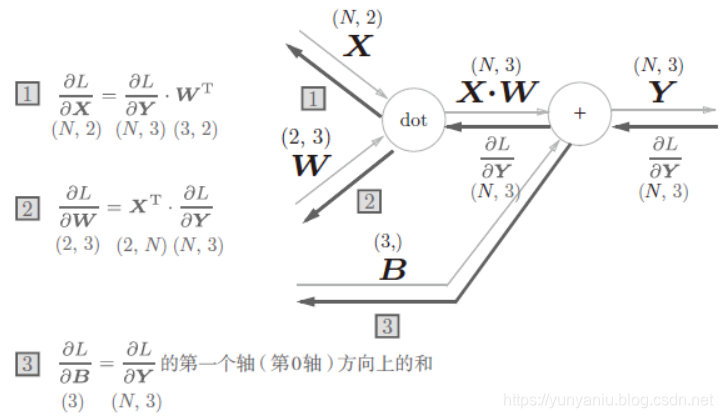
softmax with loss的示例如下：
- 为了得到\((y_1-t_1,y_2-t_2,y_3-t_3)\)漂亮的结果，才设计了交叉熵的误差函数。
学习技巧
优化方法
目前并不存在在所有问题中都表现良好的方法。一般而言，相较于SGD，其他方法收敛更快，有时精度更好。
随机梯度下降法SGD：梯度的方向并没有指向最小值的方向。如果函数的形状非均向（anisotropic），比如呈延申状，搜索的路径就会非常低效。 $$ \bold W \leftarrow \bold W-\eta \frac{\partial{L}}{\partial{W}} $$
Momentum：\(\alpha{v}\) 表示物体不受力时，承担使物体逐渐减速的任务。
- 保留之前的方向，引入了动量的概念，它会累积之前的梯度信息，让参数更新具有一定的惯性。
AdaGrad：学习率衰减（学习率随迭代次数减小）仍是针对所有元素共同衰减
- 自适应地调整每个参数的学习率，对于频繁更新的参数学习率会变小；对于不常更新的参数学习率会变大
- h 保存以前的所有梯度值的平方和，意味着参数变动大的元素的学习率将变小；
- 用 RMSProp 解决学习次数多后更新量为0的问题：逐渐遗忘过去的梯度，如之前的权重0.9，现在的0.1。
Adam：结合 Momentum 和 AdaGrad
- 一般来说，\(\beta_{1}=0.9, \beta_{2}=0.999\)
以 \(f=\frac{1}{20}x^2+y^2\)为例，绘制不同优化方法的搜索路径，如下图
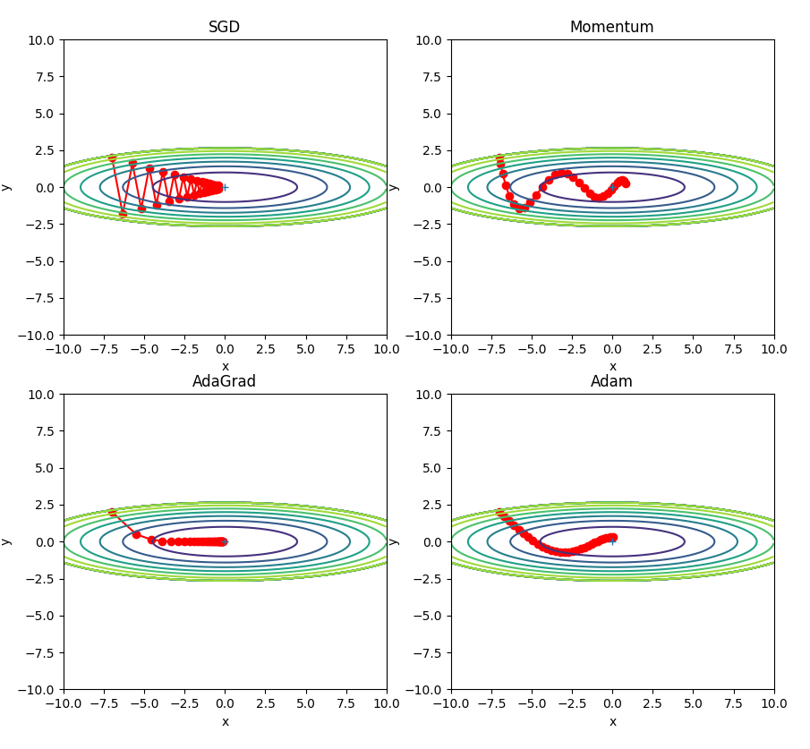
权重的初始值
Xavier 初始化
将权重初始化设置为0，将无法进行正常学习。（严格的说，不能初始化为同样的值）
- 正向传播时输出是相同的值，反向传播时，权重会进行相同的更新，需要瓦解权重的对称结构；
隐藏层的激活值的分布：激活值在分布上有所偏向会出现梯度消失”表现力受限”的问题；
- 如果100个神经元都输出相同的值，那么也可以由1个神经元来表达相同的事情；
- 对于sigmoid激活函数，如果偏向0和1的分布，会导致反向传播时梯度不断变小，最后消失。
Xavier 初始值：以激活函数是线性函数为前提推导出，适用于 sigmoid 和tanh 激活函数。
- 如果前一层的节点数为 n，则初始化使用标准差为\(\sqrt{1/n}\)的分布。论文中是前一层和后一层的节点数均值的平方根。
- sigmoid 和tanh 激活函数左右对称，且中央附近可以视作线性函数。
Kaiming He 初始值：针对 RELU 激活函数：
- 如果前一层的节点数为 n，则初始化使用标准差为\(2/\sqrt{n}\)的分布。
Batch Normalization
强制性调整激活值的分布，使得各层有适当的广度。
- 使用方式：Affine+BatchNorm+ReLU 还是 Affine+ReLU+BatchNorm 。
2015年出现，但已广泛使用。其优势：
- 学习更快速（可以增大学习率）；
- 不那么依赖初始值；
- 抑制过拟合（降低 Dropout等的必要性）；
Batch Norm：以学习时的 mini-batch 为单位，按 mini-batch 进行正规化（均值0，方差1）。
正则化
解决过拟合的问题，一般通过 L2 范式。
权重衰减是常用抑制过拟合的方法，对值较大的权重进行惩罚，来抑制过拟合。
-
较大的权重意味着模型对输入数据的微小变化更敏感，过度拟合噪声，泛化能力下降；根据奥卡姆剃刀原理，简单模型更可能泛化到未知数据。
-
损失函数 += \(\frac{1}{2}\lambda W^2\)，\(L1, L2, L_\infty\) 范数各有特点，都可以用作正则化项。
Dropout
如果网络模型变得很复杂，只用权值衰减难以应对。（可以用 BatchNorm 替代）
Dropout 是一种在学习的过程中随机删除神经元的方法。
- 训练时：每次都随机选出隐藏层的神经元，然后将其删除，被删除的神经元不进行信号的传递；
- 通过删除比例，构建随机的掩码值，筛选出传递的神经元。反向传播时行为跟ReLU相同。
- 测试时：传递所有的神经元的信号，但是对于各个神经元的输出，要乘上训练时的删除比例后再输出。
可以理解 Dropout 将集成学习的效果（模拟地）通过一个网络实现：
- 学习过程中随即删除神经元，每次让不同的模型进行学习；
- 推理时，对神经元的输出乘以删除比例（如0.5），可以取得模型的平均值。
超参数
调整超参数时，必须使用超参数专用的确认数据，被称为验证数据。
- 验证数据不是测试数据，一般从训练数据中进行分割（20%）。
超参最优化方法：网格搜索、随机采样、贝叶斯最优化
- 确定超参数，确定对数尺度（如10e-3~10e3），随机生成指数 ；
- 对每种超参数选择，运行一定的 epoch（不用太多 < 50），选择最好的前几个，确定超参数范围；
- 再次迭代，优化超参数的选择，逐渐缩小“好值”存在的范围。
卷积神经网络
使用方式：Convolution - ReLU - (Pooling)
- 卷积核的参数初始化跟上一节相同，可以采用 Xavier / He 初始化。
卷积层
全连接层的问题，在于形状被忽视了。图像是3维形状，形状中含有重要的空间信息。
- 如：空间上临近的像素为相似的值，RGB的各个通道之间分别有密切的关联性等。
卷积层通过局部感知、参数共享和平移不变性，在图像处理、语音识别等领域实现了高效的特征提取。
- 每个神经元仅连接输入的一个局部区域（如 3×3 的图像块），通过滑动窗口提取局部特征（如边缘、纹理）；
- 同一卷积核的参数在整个输入上共享，大幅减少参数量；
- 对输入中的平移模式（如物体位置变化）具有天然的鲁棒性。
卷积运算：乘积累加运算。填充（padding）是指在输入高和宽的两侧填充元素（通常是0元素）。每次滑动的行数和列数称为步幅（stride）。
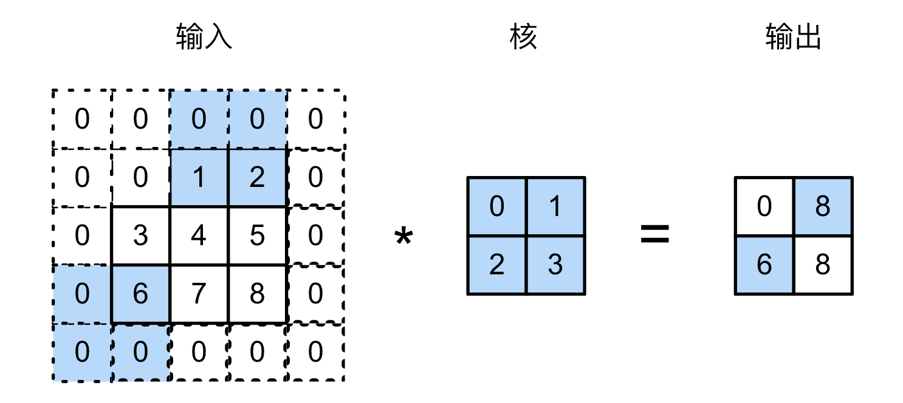
假设输入大小是(H, W)，滤波器（核）大小为(FH, FW)，输出大小为(OH, OW)，填充为P，步幅为S。 $$ OH=\frac{H+2P-FH}{S}+1 \ OW=\frac{W+2P-FW}{S}+1 $$ 3维数据的卷积中（通道），输入数据和滤波器的通道数要为同样的值，每个滤波器大小要一致。卷积运算中也存在偏置，每个通道只有一个偏置的值。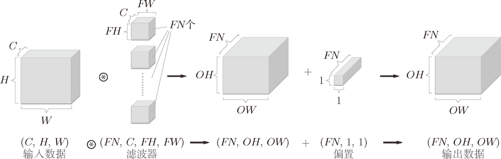
批处理(mini-batch)的支撑：
- 按 (batch_num, channel, height, width) 的顺序保存数据
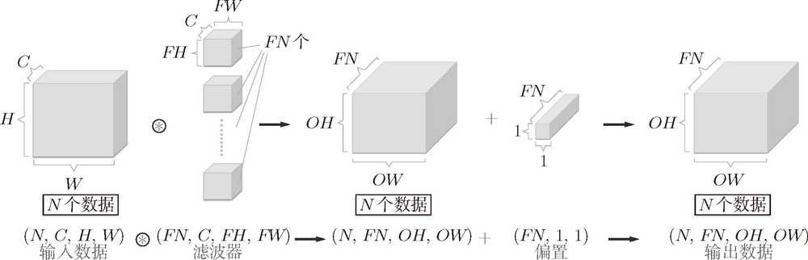
池化层
池化是缩小高、长方向上的空间的运算。Max 池化是从目标区域中取出最大值。Average 池化则是计算目标区域的平均值。在图像识别领域，主要使用 Max 池化。
- 池化层和卷积层不同，没有要学习的参数。
- 经过池化运算，输入数据和输出数据的通道数不会发生变化，是按通道独立进行。
- 对微小的位置变化具有鲁棒性（健壮）
实现细节
im2col 会把输入数据展开以适合滤波器（权重），对于输入数据，将应用滤波器的区域（3 维方块）横向展开为 1 行。
- 内存消耗大，展开后的元素多余原方块的元素个数。
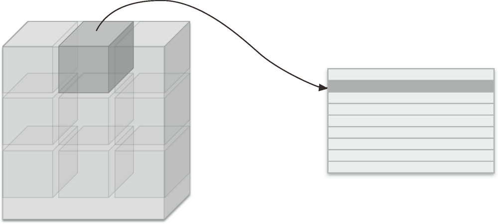
将卷积层的滤波器（权重）纵向展开为 1 列，并计算 2 个矩阵的乘积即可。
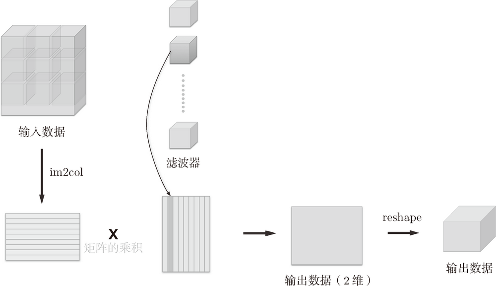
卷积层的反向传播除了需要实现col2img外，其它的跟 Affine 层一致。
池化层的数据展开，在通道方向是独立的。下面是池化层的实现流程示例：池化的应用区域内的最大值元素用灰色表示
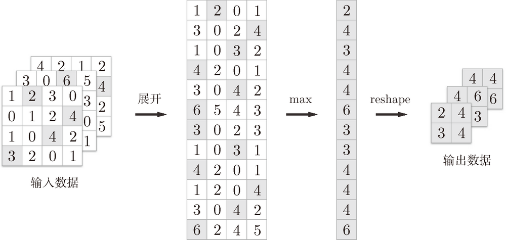
池化层的反向传播：
- 最大池化：仅对前向传播中被选中的最大值位置分配梯度，其余位置梯度为 0。
CNN可视化
将卷积层的滤波器显示为图像。通过学习，滤波器被更新成了有规律的滤波器，比如从白到黑渐变的滤波器、含有块状区域（称为 blob）的滤波器等。
将 mnist 的CNN 第 1 层权重的可视化如下图所示：
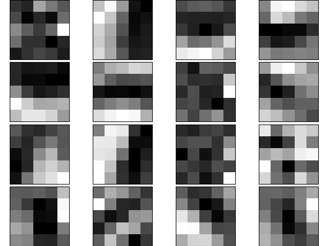
将上面滤波器应用到 lena 图像，可以看出不同的滤波器提取不同的特征。
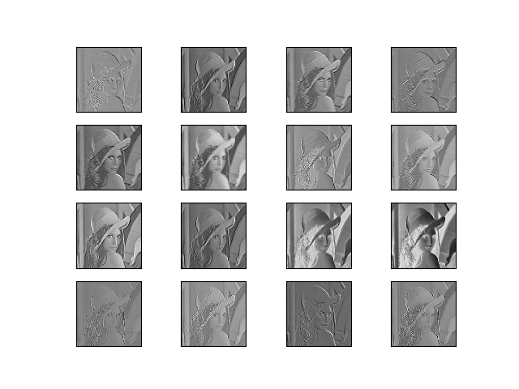
上面的结果是针对第 1 层的卷积层得出的。第 1 层的卷积层中提取了边缘或斑块等“低级”信息，那么在堆叠了多层的 CNN 中，各层中又会提取什么样的信息呢？
下图 中展示了进行一般物体识别（车或狗等）的 8 层 CNN（AlexNet）。
- CNN 的卷积层中提取的信息。第 1 层的神经元对边缘或斑块有响应，第 3 层对纹理有响应，第 5 层对物体部件有响应，最后的全连接层对物体的类别（狗或车）有响应。
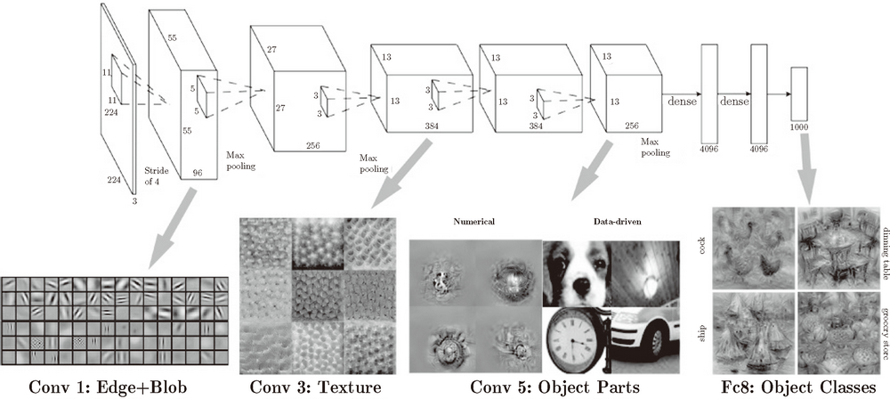
具有代表性的 CNN
1998 年首次被提出的 CNN 元祖 LeNet，2012 年被提出的 AlexNet。AlexNet 对比 LeNet 的区别：
- 激活函数使用 ReLU。
- 使用进行局部正规化的 LRN（Local Response Normalization）层。
- 使用 Dropout。
深度学习
加深网络
进一步提高精度识别的技术：集成学习、学习率衰减、数据扩充(Data Augmentation)
- Data Augmentation：“人为地”扩充训练图像，采用旋转、平移、裁剪、翻转、亮度变化等方法。
加深层的重要性：理论研究尚不够透彻（截止2015年）
- 之前的研究和实验（如卷积层的可视化）可以解释；
- 基于比赛结果，层次越深，识别性能越高；
加深层的好处：
- 减少网络参数数量：如一次5 * 5的卷积运算的区域等价于两次3 * 3的卷积运算；
- 通过加深层，可以分层次地传递信息；
主流网络架构历史
图像识别：2012年 AlexNet，2014年 VGG / GoogleNet，2015年 ResNet。
- VGG 采用连续的几个3x3的卷积核代替AlexNet中的较大卷积核（11x11，7x7，5x5），步幅1，padding1，图像的长宽不变；
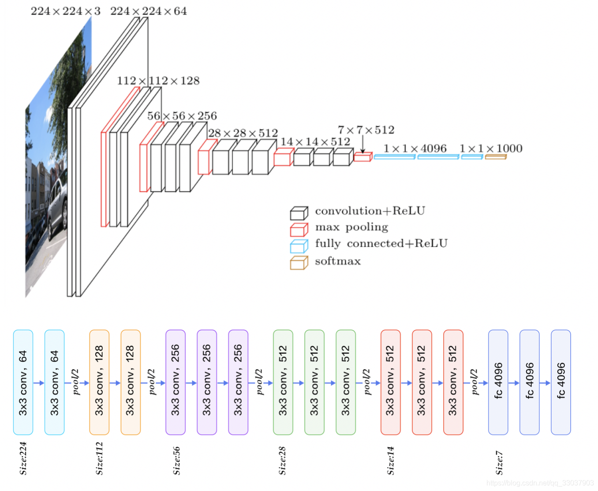
-
GoogleNet：不仅在纵向上有深度，横向上也有深度（广度），采用Inception结构：
-
1 * 1 的卷积核可以减少参数和实现高度化处理；
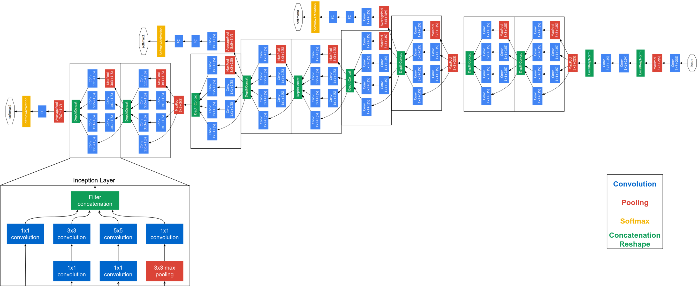
-
ResNet：残差神经网络，发现了“退化现象（Degradation）”，并针对退化现象发明了 “快捷连接（Shortcut connection）”，极大的消除了深度过大的神经网络训练困难问题
-
深层神经网络难以实现“恒等变换（y=x）”：随着网络深度的不断增大，所引入的激活函数也越来越多，数据被映射到更加离散的空间，此时已经难以让数据回到原点（恒等变换）；
- 提出residual结构（残差结构），\(y=F(x)+x\)，并搭建超深的网络结构(突破1000层)；
- 使用Batch Normalization加速训练(丢弃dropout)；

高速化学习
AlexNet 中，卷积层的处理时间占据GPU整体时间 95%，CPU整体时间 89%。
- 如何高速、高效地进行大量的乘积累加运算。
分布式机器学习：
- 需要解决机器间的通信、数据同步等多个难题；
运算精度的位数缩减：深度学习中使用16位的半精度浮点数也可以顺利学习。
- 深度学习不那么需要数据精度的位数，这是基于神经网络的健壮性（即便输入图像附有一些小的噪声，输出结果仍然保持不变）。
应用案例
物体检测：R-CNN、Faster R-CNN。
图像分割：FCN方法（Fully Convolution Network，全部由卷积层构成的网络），FNC将全连接层换成发挥相同作用的卷积层。
图像标题生成：NIC（Neural Image Caption），由深层的CNN和处理自然语言的RNN（Recurrent Neural Network）构成。
图像风格变化："A neural Algorithm f Artistic Style".
图像生成：DCGAN（Deep Convolutional Generative Adversarial Network）
自动驾驶：
多模态
组合图像和自然语言等多种信息进行的处理成为多模态处理。
生成对抗网络
迁移学习
迁移学习：将学习完的权重（的一部分）复制到其它神经网络，进行在学习（fine tuning）。
- 适用于手头数据集较少时，比较有效果。
强化学习
代理（Agent）根据环境选择行动，然后通过这个行动改变环境。
Deep Q-Network（简称：DQN），基于被称为Q学习的强化学习算法，在Q的学习中，为确定合适的行动，需要确定一个被称为最优行动价值的函数，为近似这个函数，又使用的深度学习CNN。
参考文献
- 《深度学习入门：基于Python的理论与实现》. 斋藤康毅，陆宇杰 (译). 人民邮电出版社.